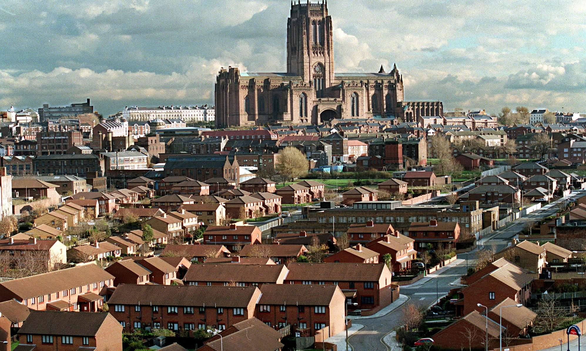
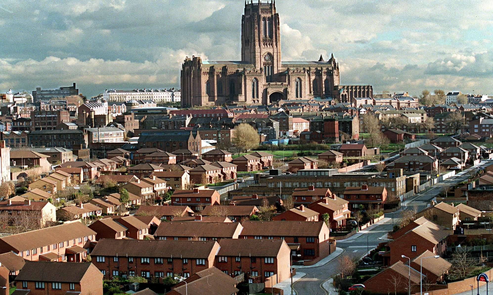

Liverpool
Willkommen in Liverpool
Liverpool (510000 Ew.) ist der heilige Ort aller Beatles-Pilger. John, Paul, George und Ringo kommen aus der Stadt am Mersey.
Hier befindet sich die Penny Lane, steht die Statue der einsamen Eleanor Rigby, gab es das Kinderheim Strawberry Fields. Mit Blick auf die Wahl Liverpools zur europäischen Kulturhauptstadt 2008 wurde viel getan, um das Hafenviertel und die Innenstadt herauszuputzen. Sehenswert sind außerdem die beiden im 20. Jh. gebauten Kathedralen, die römisch-katholische ein innovatives Betonzelt mit schönen Glasmalereien, die anglikanische konservativ neugotisch, imposant mit hohem Turm.
Sehenswertes vor Ort
-
Walker Art Gallery
Die Walker Art Gallery ist eine Kunstgalerie, in der sich eine der größten Kunstsammlungen von ganz England befindet. Daher wird sie oft auch als National Gallery of the North bezeichnet. In ihr befinden sich Gemälde und Skulpturen von großen Meistern und heute nahezu unbekannten Künstlern aus den letzten 600 Jahren. Andrew Barclay Walker, ein Brauereibesitzer und Lokalpolitiker, stiftete 1873 eine Galerie. Walker war bisher nicht als Mäzen oder Kunstsammler in Erscheinung getreten, war aber bekannt dafür, öffentliche Gebäude von hohem architektonischen Standard errichten zu lassen und großzügig für gemeinnützige Zwecke zu spenden. 1874 legte Prinz Alfred, Herzog von Edinburgh, den Grundstein der Galerie. 1877 eröffnete Edward Henry Stanley, 15. Earl of Derby, unter großer öffentlicher Anteilnahme die Walker Art Gallery. 1960 erwarb die Galerie The Virgin and Child with St Elizabeth and the Child Baptist von Peter Paul Rubens. 1961 sorgte ein Spendenappell an örtliche Unternehmer für Einnahmen, die für den Erwerb von Werken großer Meister verwendet wurden, darunter Georges Seurat, Edgar Degas, Claude Monet und Paul Cézanne.
-
Cavern Club
Der Cavern Club, eröffnet im Januar 1957, war ein legendärer Rock-’n’-Roll-Club. Hier in der Mathew Street Nummer 10 trafen 1961 Brian Epstein und die Beatles zusammen. Alan Sytner gründete den Club, nachdem er in Paris Jazzkeller gesehen hatte. Der Cavern entstand nach dem Vorbild des Pariser Le Caveau. Zunächst ein Jazzclub, wurde der Cavern bald die Heimat der Skiffle-Bands. 1959 verkaufte Sytner den Club an Ray McFall, da er nach London zog. Anfang der 1960er traten Bluesbands und Beatgruppen im Cavern auf. Die erste Beat-Nacht fand im Mai 1960 statt, mit Rory Storm & the Hurricanes, bei denen Ringo Starr am Schlagzeug saß. 1961 hatten die Beatles ihren ersten Auftritt, nachdem sie aus Hamburg zurückgekehrt waren. Zwischen 1961 und 1963 traten die Beatles 292 Mal im Cavern auf. In den folgenden Jahren gaben viele bekannte Bands und Interpreten Konzerte im Club, darunter The Rolling Stones, The Kinks, The Who, die Yardbirds, Elton John und John Lee Hooker. Im März 1973 wurde der Cavern Club geschlossen. Beim Bau der U-Bahn wurde das Gebäude abgerissen.
-
Albert Dock
Die ehemaligen Lagerhäuser aus dem 19. Jh. sind heute ein attraktives Freizeitviertel. In der Hafenanlage aus Backstein und Gusseisen befinden sich die Ausstellung „The Beatles Story“, das Maritime Museum mit Originalteilen der Titanic und faszinierenden Geschichten zur Entwicklung des Zolls, zu Seefahrt und Seehandel, ein Museum der Geschichte der Sklaverei, auf deren Grundlage Liverpool zu Reichtum gekommen ist, sowie eine Außenstelle der Londoner Tate Gallery mit moderner Kunst (www.tate.org.uk)
-
Port of Liverpool
Das Port of Liverpool Building ist ein Gebäude in Liverpool, welches zu den Three Graces (Drei Grazien) gehört. So werden die drei Gebäude zwischen St. Nicholas Place und Mann Island am Pier Head genannt. Es wurde von Arnold Thornley entworfen und 1907 für die Mersey Docks and Harbour Board Company nach amerikanischem Vorbild erbaut. Es wurde aus dem hellen Portland-Stein gebaut und besitzt eine große Kuppel. Im Inneren befindet sich eine achteckige Halle, welche bis zur Kuppel ragt und mehrere Galerien bildet.
-
Beatles-Tour
Von besonderer Bedeutung für die Karriere der Beatles ist eine Haltestelle der Magical Mystery Tour (tgl. 14.10 Uhr | Abfahrt Albert Dock | Preis £ 12,95 | Tel. 0151/2332459) - der Jacaranda-Club. Im Sommer 1960 haben die Beatles hier zum ersten Mal öffentlich gespielt. Das Lokal ist jetzt eine stimmungsvolle Bar (21 Slater Street | Tel. 0151/7078281). In der Mathew Street gibt es interessante Plattenläden, Pubs und den nach dem Abriss originalgetreu wieder aufgebauten Cavern Club (Tel. 0151/2361965 | www.cavernclub.org), in dem die Beatles 294-mal aufgetreten sind. In den Vororten können Fans die Häuser besuchen, in denen John Lennon und Paul McCartney ihre Kindheit verbrachten (April-Okt. Mi-Sa | nur mit telefonischer Voranmeldung Tel. 0151/714277231).
-
Cunard Building
Das Cunard Building ist ein Gebäude am Pier Head in Liverpool mit einer eleganten Fassade. Es wurde zwischen 1914 und 1918 aus hellem Portland-Stein erbaut und diente der berühmten Reederei Cunard Line als Firmensitz. Das Gebäude gehört zu den Three Graces (Drei Grazien), wie die drei Gebäude zwischen St. Nicholas Place und Mann Island genannt werden. Entworfen wurde es von Willink und Thicknesse. Arthur Davis war als Berater tätig. Es ähnelt allgemein einem italienischen Palazzo. An den Ecken des Gebäudes befindet sich jeweils ein Weißkopfseeadler. Bis in die 1960er blieb es der Firmensitz der Cunard Line. Dann wurde es an die Prudential plc, eine Firma für Finanzdienstleistungen verkauft. Im Gegensatz zu den Nachbargebäuden ist es nicht symmetrisch, sondern auf der Rückseite breiter als auf der Vorderseite.
Entdecken Sie die Schönheit Liverpools


 
